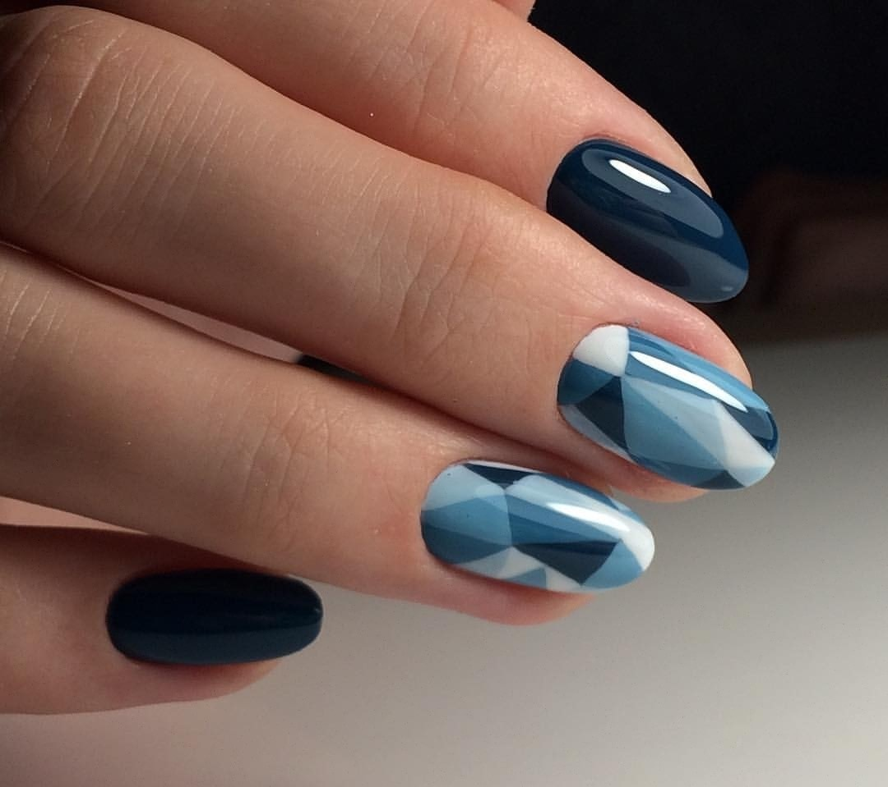

Fall/Winter 2017-2018 Nail Trends
Getting your nails done is no longer just about showing beautiful hands. Manicure techniques have evolved in methods and styles and are today an extension of who you are and an expression of your personal style.
Considered a fashion statement, nail styles keep abreast of trends, and Fall/Winter 2017-2018 is already defined. Discover now the latest for the upcoming colder seasons and start dreaming about your next new look. Dark reds: Brick and Burgundy.
Getting your nails done is no longer just about showing beautiful hands. Manicure techniques have evolved in methods and styles and are today an extension of who you are and an expression of your personal style.
Considered a fashion statement, nail styles keep abreast of trends, and Fall/Winter 2017-2018 is already defined. Discover now the latest for the upcoming colder seasons and start dreaming about your next new look.
Dark reds: Brick and Burgundy. Let's start with a touch of color. This season, the latest tones are those dark and full of glamor, with brick or burgundy as favorites; two colors that make the hands look beautiful and immediately elegant, in addition to fitting in with any winter outfit.
Dry manicure, a less traditional style, has become a winner in recent months. Paying close attention to the care of cuticles, nails are not left soaking - a step that probably makes the cuticle stick to the nail - rather the skin around the nail is smoothed thanks to products such as gel solutions or AHA cream. Are you ready to try them?
Texture and patterns. During the least exciting months in fashion, nails Fall/Winter 2017-2018 will break free from monotony. These will be the seasons and the year to experiment with new textures, colors and patterns.
All will be allowed, from choosing strong and vivid colors to highlighting these applications on the nails. It may not be the most subtle trend, rather the one getting the most attention.
French Manicure. Season after season, this style of manicure is a sure hit. It goes well with most looks and will give you a touch of elegance. This style continues to attract its most faithful followers in its more classic version, but it has also been reconverted and offers a wider range of colors to its already famous two-tone tone.
If you want to discover how to master it, take a look at the creations by artist Antonio Sacripante (he created many of the nail looks during the recent Milan Fashion Week!), an artist who introduced floral patterns and proposed the reverse-coupled manicure, the French manicure inverted, where the white is applied at the base instead of the tip.
Blue and Metallic. Blue deserves to be featured, which in addition to the super classic red, is having a considerable success. Perfect to make the nails shine even during the colder season. Ideally, and to perfectly follow this trend, you should combine all your tones with a contrasting metallic.
Our advice? Choose darker and deeper shades if your skin is pale, but if your complexion is medium or very clear opt for something lighter and metallic: the enamel will help your skin look brighter! One last trick: if you paint your nails dark blue choose a natural makeup, even pastel shades. You will see how the contrast is incredible!
Did you like our recommendations? Then come to Grit and Polish and discover everything we have for you this Fall/Winter 2017-2018!